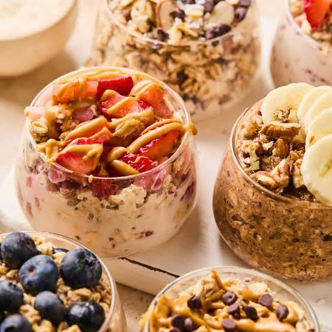

Overnight Oats

Make a simple, creamy batch of overnight oats with a classic base ratio and zero cooking required, following the guidance below.
Ingredients
- Rolled oats: ½ cup (old-fashioned rolled oats; avoid quick or steel-cut oats)
- Milk: ⅔ cup milk of your choice (dairy, almond, oat, or coconut milk)
- Greek yogurt: ¼ cup plain or vanilla Greek yogurt (optional, for extra creaminess and protein)
- Chia seeds: 1 tablespoon (helps thicken the texture and adds fiber)
- Sweetener: 1 tablespoon maple syrup or honey
- Flavor boost: ½ teaspoon vanilla extract and a pinch of salt
Preparation steps
- Combine ingredients: Add the rolled oats, chia seeds, Greek yogurt, maple syrup, vanilla extract, and salt into a mason jar or airtight container.
- Pour the milk: Pour in your preferred milk and stir thoroughly until well combined and no chia seeds are clumped at the bottom.
- Chill: Cover the jar with a lid and place it in the refrigerator for at least 4 hours, or overnight (8 hours is best).
- Serve: Give it a good stir in the morning, add your favorite toppings like fresh fruit, nuts, or a swirl of peanut butter, and enjoy cold.
Back to Home